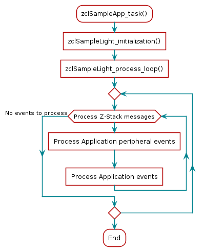
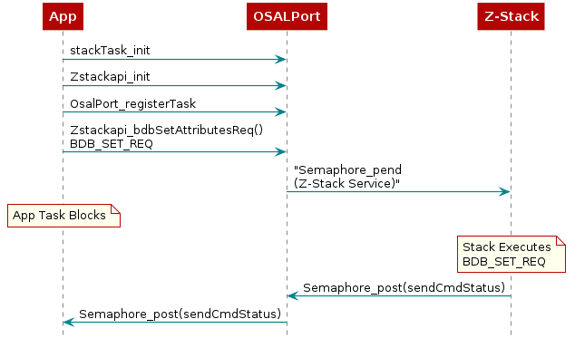

Application Overview¶
Z-Stack example applications are designed to enable faster end-product development by providing different implementations of Zigbee device definitions while conforming to ZCL v7 Specifications requirements for certification. This allows the developers to explore the usage of the stack for configuring and running a device in a network along with other essential features, such as nonvolatile (NV) memory storage to save the network parameters and application specific information. The configuration and usage of peripherals such as UART, switches, and LEDs are also shown by these sample applications. This chapter explains the application’s implementation to help developers quickly modify the Z-Stack out-of-box example applications for customized development. The following sections detail the example applications of the Z-Stack projects.
Pre-RTOS initialization
Application architecture: the Application task which is the lowest priority task in the system. The code for this task resides in the
ApplicationIDE folder.OSALPort: an interface module between Z-Stack services (such as Z-Stack APIs) as well as certain primitive services (such as thread synchronization) provided by the real-time operating system (RTOS)
Application Architecture¶
Figure 21. shows the block diagram of the Light and Switch example applications on the CC13xx and CC26xx.
Figure 21. Example Application Block Diagram¶
High-level descriptions of various blocks in Figure 21. are as follows:
TI-RTOS7 Start-up Code: Initializes the application (see Start-Up in main() for more details).
Example Application: The platform-independent implementation of the example use case. The Z-Stack out-of-box demonstrates two use cases – Light and Switch. Developers can modify this module’s out-of-box example code for custom for custom application requirements to quickly develop end products.
Utility Functions: Provides various platform utilities which the application can use. Examples include LED, timers, keys, UART and so on.
Application-Specific Functions: Implements platform-specific functions such as data storage over power cycles (nonvolatile) and provides user interface functions, such as handling button presses or displaying essential information on the UART.
Z-Stack API Module (API Z-Stack Module): This module provides an interface to the management and data services of the Zigbee stack through the OSALPort Framework module. This is further described in OSALPort Framework.
Application Preprocessor Configuration¶
The following table contains the preprocessor symbols which can be added or removed pertaining to device operation. They are located in the Project Properties as further discussed in the Useful CCS IDE Settings section of the Z-Stack Quick Start Guide.
Symbol |
Description |
Modifiable? |
Applicable projects |
|---|---|---|---|
BDB_FINDING_BINDING_CAPABILITY_ENABLED |
Set to zero to disable BDB F&B |
Y |
All |
BDB_REPORTING |
Allows automatic cluster attibute reporting |
Y |
All |
BOARD_DISPLAY_USE_UART |
Use UART communication for application information |
Y |
All |
[LaunchPad variant] |
LaunchPad variant, may be changed when migrating to a custom development board |
Y |
All |
COMBO_MAC |
MAC radio configuration |
N |
CC1352 devices |
CONFIG_PA_TYPE |
Set to APIMAC_HIGH_PA for the internal power amplifier, otherwise APIMAC_DEFAULT_PA |
Y |
CC1352P devices |
CUI_DISABLE |
Determines whether to disable the Common User Interface |
Y |
All |
DISABLE_GREENPOWER_BASIC_PROXY |
Disable GP proxy functionality |
N |
All |
DeviceFamily_CC[13/26]X2 |
Select the chipset |
N |
All |
DEVICE_FAMILY |
Select the chipset |
N |
All |
ENABLE_GREENPOWER_COMBO_BASIC |
Enable Green Power Sink functionality |
N |
Green power sink examples |
FACTORY_IMAGE |
Creates factory image backup of current image |
Y |
[zc/zed/zr]_sw_ota_client |
FEATURE_NON_BEACON_MODE |
Standard beacon type per the Zigbee specification |
N |
All |
FREQ_2_4G |
Frequency to be used, only 2.4 GHz is supported |
N |
All |
HEAPMGR_CONFIG |
Type of heap configuration used |
N |
All |
HEAPMGR_SIZE |
Heap size if not automatically configured |
Y |
All |
MAX_DEVICE_TABLE_ENTRIES |
Required as part of 15.4 stack |
N |
All |
MAX_STATUS_LINES |
Maximum lines supported by the CUI |
N |
All |
MT_[FUNC] |
Function enabled for the MT interface |
Y |
All |
NO_CC1312R1_SUPPORT |
Board-specific key initialization |
N |
CC1352 devices |
NPI |
Include Network Processor Interface |
Y |
All |
NPI_FLOW_CTRL |
Enables CTS/RTS for UART transportation |
Y |
All |
NPI_USE_UART |
Use UART communication for ZNP processing |
Y |
All |
NVOCMP_NVPAGES |
Number of flash pages allocated for NV memory |
Y |
All |
NV_INIT |
Store network settings in non-volatile memory |
Y |
All |
NV_RESTORE |
Restore previous network settings on start-up |
Y |
All |
NWK_MANAGER |
Enables device to become the Network Manager |
Y |
zc/zr/znp builds |
OSAL_PORT2TIRTOS[_OSALMAP] |
Use the OSAL Port to interface with the management and data services of the Zigbee stack |
N |
All |
OTA_APP_VERSION |
Version of OTA application |
Y |
[zc/zed/zr]_sw_ota_client |
OTA_CLIENT_INTEGRATED |
Device is an OTA client |
N |
[zc/zed/zr]_sw_ota_client |
OTA_MANUFACTURER_ID |
ID of manufacturer for OTA applications |
Y |
[zc/zed/zr]_sw_ota_client |
OTA_SERVER |
Application is an OTA server for host interaction Define as TRUE or FALSE |
Y |
[zc/zr]_ota_server |
OTA_TYPE_ID |
OTA device type |
N |
[zc/zed/zr]_sw_ota_client |
POWER_TEST_DATA_ACK |
Enables data transmit power test mode |
Y |
light and sw examples |
POWER_TEST_POLL_ACK |
Enables data request power test mode |
Y |
light and sw examples |
POWER_TEST_POLL_DATA |
Enables data receive power test mode |
Y |
light and sw examples |
POWER_TEST_TX_PWR |
Define a TX output level for power tests |
Y |
light and sw examples |
SECURITY |
Enables OTA secure BIM |
N |
[zc/zed/zr]_sw_ota_client |
TC_LINKKEY_JOIN |
Check if a specific device has been authenticated |
N |
All |
TIMAC_ROM_IMAGE_BUILD |
Use the TIMAC image stored in ROM |
N |
All |
TIMAC_ROM_PATCH |
Apply TIMAC ROM patches |
N |
All |
CUI_DISABLE |
Disable the common user interface |
Y |
All |
ZCL_[CLUSTER NAME] |
Zigbee clusters allowed by the application |
Y |
All |
ZCL_[READ/WRITE/ETC] |
Ability to process ZCL foundation incoming command and response messages |
Y |
All |
ZCL_REPORT_CONFIGURING_DEVICE |
Device can can configure reporting parameters |
Y |
All |
ZCL_REPORT_DESTINATION_DEVICE |
Device is a destination for ZCL reports |
Y |
All |
ZCL_STANDALONE |
Enables local ZCL function control |
N |
All |
ZDO_API_BASIC |
Basic ZDO functions enabled |
Y |
All |
ZDO_API_ADVANCED |
Advanced ZDO functions enabled |
Y |
All |
ZNP_NPI |
If the device is a Zigbee Network Processor |
Y |
znp |
Z_POWER_TEST |
Enables power test modes for an application |
Y |
light and sw examples |
ZSTACK_SECURITY |
Initializes the AES ECB module |
N |
All |
ZSTACK_GPD |
Project for a Green Power device |
N |
gpd_[switch/temperature] |
Note
Several of the symbols referenced are used for specific sample applications and do not apply to all projects included in Z-Stack. ZCL definitions are used to reduce project memory space and if enabled then users are responsible for registering the associated endpoints and callbacks inside of the Z-Stack application. Failure to do so will cause issues (ex. failed callbacks) which are not discovered during the project build.
Note
Please refer to the preprocessor symbols section of the Z-Stack Quick Start Guide to setup compile options for the project if using IAR.
Start-Up in main()¶
The main() function inside of main.c is the application starting
point at runtime. This is where the board is brought up with interrupts
disabled and board-related components are initialized.
Tasks in this function are configured by initializing the
necessary parameters, setting their priority, and initializing the stack size
for the application. The primary IEEE address (programmed by TI) is
obtained from the CCFG area of the flash memory and NV drivers are
initialized. In the final step, interrupts are enabled and the
SYS/BIOS kernel scheduler is started by calling BIOS_start(),
which does not return. See the CC13x2 CC26x2 SimpleLink Wireless MCU Technical Reference Manual for information on the start-up sequence
before main() is reached.
Void main()
{
#ifndef USE_DEFAULT_USER_CFG
zstack_user0Cfg.macConfig.pAssertFP = assertHandler;
#endif
/* enable iCache prefetching */
VIMSConfigure(VIMS_BASE, TRUE, TRUE);
#if defined(USE_CACHE_RAM)
/* Disable cache */
VIMSModeSet( VIMS_BASE, VIMS_MODE_DISABLED);
#else
/* Enable cache */
VIMSModeSet( VIMS_BASE, VIMS_MODE_ENABLED);
#endif
/*
Initialization for board related stuff such as LEDs
following TI-RTOS convention
*/
Board_initGeneral();
// OTA client projects use BIM, so CCFG isn't present in this image
#if !((defined OTA_CLIENT_STANDALONE) || (defined OTA_CLIENT_INTEGRATED))
/*
* Copy the extended address from the CCFG area
* Assumption: the memory in CCFG_IEEE_MAC_0 and CCFG_IEEE_MAC_1
* is contiguous and LSB first.
*/
/* Used to check for a valid extended address */
static const uint8_t dummyExtAddr[] =
{ 0xFF, 0xFF, 0xFF, 0xFF, 0xFF, 0xFF, 0xFF, 0xFF };
OsalPort_memcpy(zstack_user0Cfg.extendedAddress, (uint8_t *)&(__ccfg.CCFG_IEEE_MAC_0),
(APIMAC_SADDR_EXT_LEN));
/* Check to see if the CCFG IEEE is valid */
if(memcmp(zstack_user0Cfg.extendedAddress, dummyExtAddr, APIMAC_SADDR_EXT_LEN) == 0)
#endif // (defined OTA_CLIENT_STANDALONE) || (defined OTA_CLIENT_INTEGRATED
{
/* No, it isn't valid. Get the Primary IEEE Address */
OsalPort_memcpy(zstack_user0Cfg.extendedAddress, (uint8_t *)(FCFG1_BASE + EXTADDR_OFFSET),
(APIMAC_SADDR_EXT_LEN));
}
/* Setup the NV driver */
NVOCMP_loadApiPtrs(&zstack_user0Cfg.nvFps);
#ifdef NVOCMP_MIN_VDD_FLASH_MV
NVOCMP_setLowVoltageCb(&Main_lowVoltageCb);
#endif
if(zstack_user0Cfg.nvFps.initNV)
{
zstack_user0Cfg.nvFps.initNV(NULL);
}
#ifdef ZSTACK_GPD
OsalPort_memcpy(ApiMac_extAddr, zstack_user0Cfg.extendedAddress,
(APIMAC_SADDR_EXT_LEN));
_macTaskId = macTaskInit(&zstack_user0Cfg.macConfig);
#else
/* configure stack task */
stackTask_init(&zstack_user0Cfg);
#endif // ZSTACK_GPD
#ifdef NPI
extern void NPITask_createTask(void);
NPITask_createTask();
Semaphore_Params semParam;
Semaphore_Params_init(&semParam);
semParam.mode = ti_sysbios_knl_Semaphore_Mode_COUNTING;
Semaphore_construct(&npiInitializationMutex, 0, &semParam);
npiInitializationMutexHandle = Semaphore_handle(&npiInitializationMutex);
#endif
// ZNP does not need an application task
#ifndef ZNP_NPI
#ifndef CUI_DISABLE
CUI_params_t cuiParams;
CUI_paramsInit(&cuiParams);
CUI_init(&cuiParams);
#endif
Task_Params taskParams;
/* Configure app task. */
Task_Params_init(&taskParams);
taskParams.stack = myTaskStack;
taskParams.stackSize = APP_TASK_STACK_SIZE;
taskParams.priority = 2;
Task_construct(&myTask, taskFxn, &taskParams, NULL);
#endif
#ifdef DEBUG_SW_TRACE
IOCPortConfigureSet(IOID_8, IOC_PORT_RFC_TRC, IOC_STD_OUTPUT
| IOC_CURRENT_4MA | IOC_SLEW_ENABLE);
#endif /* DEBUG_SW_TRACE */
BIOS_start(); /* enable interrupts and start SYS/BIOS */
return 0; // never executed
}
In terms of the IDE workspace, main.c exists in the Application project –
meaning that when compiled it is placed in the allocated section of the application’s flash.
Application Initialization Function¶
Tasks describes how a task is constructed. After the
task is constructed
and the SYS/BIOS kernel scheduler is started, the function that was passed
during task construction is run when the task is ready. Power-management
functions are initialized here, then the application task is initialized and started.
Void taskFxn(UArg a0, UArg a1)
{
#if defined(USE_CACHE_RAM)
/* Retain the Cache RAM */
Power_setConstraint(PowerCC26XX_SB_VIMS_CACHE_RETAIN);
#endif
#ifdef ZSTACK_GPD
#else
/* get the service taskId of the Stack */
stackServiceTaskId = stackTask_getStackServiceId();
/* configure the message API the application will use to communicate with
the stack */
Zstackapi_init(stackServiceTaskId);
#endif
/* Kick off application */
extern void sampleApp_task(NVINTF_nvFuncts_t *pfnNV);
sampleApp_task(&zstack_user0Cfg.nvFps);
}
For application examples, main calls taskfnx(),
which later calls zclSampleApp_task that serves as the entrance for
the application code to configure Z-Stack network parameters as well as
application specific peripherals configurations, callbacks, and stack
notifications. Some examples are:
Timers initialization.
Button and LEDs.
Register the application endpoint, clusters, and attributes.
Register for callbacks to process general clusters commands.
Initialize network configuration parameters.
Register for ZDO callbacks.
Initialize the serial Common User Interface (CUI).
Event Processing in the Task Function¶
After initializing the peripherals and configuring the application and
implementing the initialization function from the previous code snippet,
zclSampleApp_task(), it enters an infinite loop so as to continuously
process as an independent task and not run to completion, seen
in Figure 22..

Figure 22. Light Example Application Task Flow Chart¶
Figure 22. shows various reasons for posting to the semaphore, causing the task to become active.
Events Signaled Through the Internal Event Variable¶
The Application task uses an event variable bit mask to identify what action caused the process to wake up and take appropriate action. Each bit of the event variable corresponds to a defined event such as:
// Application Events
#define SAMPLELIGHT_POLL_CONTROL_TIMEOUT_EVT 0x0001
#define SAMPLELIGHT_LEVEL_CTRL_EVT 0x0002
#define SAMPLEAPP_END_DEVICE_REJOIN_EVT 0x0004
#define SAMPLEAPP_DISCOVERY_TIMEOUT_EVT 0x0008
#define SAMPLEAPP_PROV_CONNECT_EVT 0x0080
#define SAMPLEAPP_PROV_DISCONNECT_EVT 0x0010
#define SAMPLEAPP_POLICY_UPDATE_EVT 0x0020
#define SAMPLEAPP_SYNC_ATTR_EVT 0x0040
Whichever function sets this bit in the event variable must also ensure to post to the semaphore to wake up the application for processing. An example of this is the clock handler for clock timeouts.
static void zclSampleLight_processLevelControlTimeoutCallback(UArg a0)
{
(void)a0; // Parameter is not used
appServiceTaskEvents |= SAMPLELIGHT_LEVEL_CTRL_EVT;
// Wake up the application thread when it waits for clock event
Semaphore_post(appSemHandle);
}
Which is later handled and the event bit is cleared as the event got processed.
if(appServiceTaskEvents & SAMPLELIGHT_LEVEL_CTRL_EVT)
{
zclSampleLight_AdjustLightLevel();
appServiceTaskEvents &= ~SAMPLELIGHT_LEVEL_CTRL_EVT;
}
When adding an event, it must be unique for the given task and be a power of 2
(so that only 1 bit is set). Because the event variable is initialized as
uint32_t, this setup allows for a maximum of 32 internal events.
However, the sample projects pre-determine several application events
inside their header file (for example, zcl_samplelight.c) along with
0x8000 being generally reserved for SYS_EVENT_MSG. Therefore, only
customizable application events from 0x10000 and above should be utilized.
Callbacks¶
The application code also likely includes various callbacks from the protocol
stack layer and RTOS modules. To ensure thread safety, processing should be
minimized in the actual callback and the bulk of the processing should be done
in the application context. The following code snippet shows how the events
and callbacks from the stack are processed, the stack notifications are
redirected to zclSampleLight_processZStackMsgs(), and the application
events are directly processed here.
static void zclSampleLight_process_loop(void)
{
/* Forever loop */
for(;;)
{
zstackmsg_genericReq_t *pMsg = NULL;
bool msgProcessed = FALSE;
/* Wait for response message */
if(Semaphore_pend(appSemHandle, BIOS_WAIT_FOREVER ))
{
/* Retrieve the response message */
if((pMsg = (zstackmsg_genericReq_t*) OsalPort_msgReceive( appServiceTaskId )) != NULL)
{
zclSampleLight_processZStackMsgs(pMsg);
#ifdef PER_TEST
PERTest_processZStackMsg(pMsg);
#endif
// Free any separately allocated memory
msgProcessed = Zstackapi_freeIndMsg(pMsg);
}
if((msgProcessed == FALSE) && (pMsg != NULL))
{
OsalPort_msgDeallocate((uint8_t*)pMsg);
}
#ifdef PER_TEST
PERTest_process();
#endif
#ifndef CUI_DISABLE
//Process the events that the UI may have
zclsampleApp_ui_event_loop();
#endif
if ( appServiceTaskEvents & SAMPLEAPP_DISCOVERY_TIMEOUT_EVT )
{
discoveryInprogress = FALSE;
appServiceTaskEvents &= ~SAMPLEAPP_DISCOVERY_TIMEOUT_EVT;
}
#if defined(USE_DMM) && defined(BLE_START)
// REMOVED DMM CODE
#endif // defined(USE_DMM) && defined(BLE_START)
#ifdef ZCL_LEVEL_CTRL
if(appServiceTaskEvents & SAMPLELIGHT_LEVEL_CTRL_EVT)
{
zclSampleLight_AdjustLightLevel();
appServiceTaskEvents &= ~SAMPLELIGHT_LEVEL_CTRL_EVT;
}
#endif // ZCL_LEVEL_CTRL
#if !defined (DISABLE_GREENPOWER_BASIC_PROXY) && (ZG_BUILD_RTR_TYPE)
if(appServiceTaskEvents & SAMPLEAPP_PROCESS_GP_DATA_SEND_EVT)
{
if(zgGP_ProxyCommissioningMode == TRUE)
{
zcl_gpSendCommissioningNotification();
}
else
{
zcl_gpSendNotification();
}
appServiceTaskEvents &= ~SAMPLEAPP_PROCESS_GP_DATA_SEND_EVT;
}
if(appServiceTaskEvents & SAMPLEAPP_PROCESS_GP_EXPIRE_DUPLICATE_EVT)
{
gp_expireDuplicateFiltering();
appServiceTaskEvents &= ~SAMPLEAPP_PROCESS_GP_EXPIRE_DUPLICATE_EVT;
}
if(appServiceTaskEvents & SAMPLEAPP_PROCESS_GP_TEMP_MASTER_EVT)
{
gp_returnOperationalChannel();
appServiceTaskEvents &= ~SAMPLEAPP_PROCESS_GP_TEMP_MASTER_EVT;
}
#endif
#if ZG_BUILD_ENDDEVICE_TYPE
if ( appServiceTaskEvents & SAMPLEAPP_END_DEVICE_REJOIN_EVT )
{
zstack_bdbRecoverNwkRsp_t zstack_bdbRecoverNwkRsp;
Zstackapi_bdbRecoverNwkReq(appServiceTaskId,&zstack_bdbRecoverNwkRsp);
appServiceTaskEvents &= ~SAMPLEAPP_END_DEVICE_REJOIN_EVT;
}
#endif
#if defined (Z_POWER_TEST)
// REMOVED POWER TEST CODE
#endif // Z_POWER_TEST
}
}
}
Stack notifications are meant to provide context to the application to take some decisions and notify the stack, if required. An example of this is the BDB Filter Networks Descriptors indication shown below:
case zstackmsg_CmdIDs_BDB_FILTER_NWK_DESCRIPTOR_IND:
/* User logic to remove networks that do not want to join
* Networks to be removed can be released with Zstackapi_bdbNwkDescFreeReq
*/
Zstackapi_bdbFilterNwkDescComplete(appServiceTaskId);
break;
In this case the message contained in the notification carries the network descriptor
of the networks found during the commissioning process. The application is in charge
of removing those networks that are not meant to be joined (if the application is
willing to join specific networks) by calling Zstackapi_bdbNwkDescFreeReq()
to remove the network descriptor. After the filtering is done, the application must
indicate to the stack that it has to process the remaining network descriptors (even
if all the network descriptors has been removed) by calling
Zstackapi_bdbFilterNwkDescComplete() so that the stack may continues with its process.
Other stack notifications can be handled by application logic to update the application state, such as Base Device Behavior BDB notifications, which provides status of the previous commissioning requests from the application.
case zstackmsg_CmdIDs_BDB_NOTIFICATION:
{
zstackmsg_bdbNotificationInd_t *pInd;
pInd = (zstackmsg_bdbNotificationInd_t*)pMsg;
zclSampleLight_ProcessCommissioningStatus(&(pInd->Req));
}
break;
Asynchronous Z-Stack Callbacks must be registered by calling
Zstackapi_DevZDOCBReq() with the correct fields set to true in a
zstack_devZDOCBReq_t. For example, if you would like to receive device state change
notifications then the following must be called from zclSampleLight_Init
static void SetupZStackCallbacks(void)
{
zstack_devZDOCBReq_t zdoCBReq = {0};
// Register for Callbacks, turn on:
// Device State Change,
// ZDO Match Descriptor Response,
zdoCBReq.has_devStateChange = true;
zdoCBReq.devStateChange = true;
zdoCBReq.has_matchDescRsp = true;
zdoCBReq.matchDescRsp = true;
zdoCBReq.has_ieeeAddrRsp = true;
zdoCBReq.ieeeAddrRsp = true;
#if defined Z_POWER_TEST
#if defined (POWER_TEST_POLL_DATA)
zdoCBReq.has_deviceAnnounce = true;
zdoCBReq.deviceAnnounce = true;
#endif
#endif // Z_POWER_TEST
(void)Zstackapi_DevZDOCBReq(appServiceTaskId, &zdoCBReq);
}
Afterwards it can be handled in a zclSampleLight_processZStackMsgs() case statement.
More information is provided in the Z-Stack API.
case zstackmsg_CmdIDs_DEV_STATE_CHANGE_IND:
{
#if !defined(CUI_DISABLE) || defined(USE_DMM) && defined(BLE_START)
// The ZStack Thread is indicating a State change
zstackmsg_devStateChangeInd_t *pInd =
(zstackmsg_devStateChangeInd_t *)pMsg;
#endif // !defined(CUI_DISABLE) || defined(USE_DMM) && defined(BLE_START)
#ifndef CUI_DISABLE
UI_DeviceStateUpdated(&(pInd->req));
#endif
#if defined(USE_DMM) && defined(BLE_START)
provState = pInd->req.state;
appServiceTaskEvents |= SAMPLEAPP_POLICY_UPDATE_EVT;
// Wake up the application thread when it waits for clock event
Semaphore_post(appSemHandle);
#endif // defined(USE_DMM) && defined(BLE_START)
}
break;
OSALPort Framework¶
OSALPort is a module that provides a mechanism for the Application to interface with Z-Stack services (such as Z-Stack APIs), as well as certain primitive services (such as thread synchronization) provided by the real-time operating system (RTOS). OSALPort allows both the Application and protocol stack tasks to efficiently operate, communicate, and share resources in a unified RTOS environment.
{kind=link}
OSALPort Protocol Stack Service¶
As depicted in Figure 23., the OSALPort core use case involves messages between a server entity (the Z-Stack task) and a client entity (the Application task). The reasoning for this architecture is twofold: to enable independent updating of the application and Z-Stack, and to maintain API consistency as the software is ported from legacy platforms (for example OSAL for the CC253x) to the CC13xx or CC26xx TI-RTOS7. The OSALPort Z-Stack service serves as the Application interface to all Z-Stack APIs. Internally, when a Z-Stack protocol stack API is called by the Application, the OSALPort module routes (dispatches) the command to the Z-Stack, and where appropriate, routes messages from the Z-Stack to the Application.
OSALPort Service¶
OSALPort includes a service that abstracts various operating system-related functions. Due to shared resources, and to maintain interprocess communication, the Application must use the following OSALPort service functions.
Messaging and Thread Synchronization
Heap Allocation and Management
Messaging and Thread Synchronization¶
The messaging and thread synchronization functions provided by the OSALPort let users design an application to protocol stack interface in the multithreaded RTOS environment. Within the OSALPort, messaging between two tasks is achieved by sending a message block from one thread to the other using a message queue. The sender allocates memory, writes the content of the message into the memory block, and then sends (enqueues) the memory block to the recipient. Notification of message delivery is accomplished using a signaling semaphore. The receiver wakes up on the semaphore, copies the message memory block (or blocks), processes the message, and returns (frees) the memory block to the heap.
The Stack uses the OSALPort for notifying and sending messages to the Application. These service messages (such as state change notifications) received by the Application task are delivered by the OSALPort and processed in the task context of the Application.
Heap Allocation and Management¶
The OSALPort provides the Application with global heap APIs for dynamic memory allocation. OSALPort uses this heap for all protocol stack messaging as well as to obtain memory for other OSALPort services. TI recommends that the Application uses these OSALPort APIs for dynamic memory allocation within the Application.
The heap itself is automatically sized in .syscfg and can be configured by
changing the BIOS.heapSize variable. In order to monitor your heap usage,
add the HEAPMGR_METRICS definition to the Z-Stack project. Inside a debug
session it will then be possible to monitor several heap variables:
heapmgrBlkMax
heapmgrBlkCnt
heapmgrBlkFree
heapmgrMemAlo
heapmgrMemMax
heapmgrMemUB
heapmgrMemFail
heapmgrMemFreeTotal
OSALPort Initialization and Registration¶
To instantiate and initialize the OSALPort service, the following functions
must be called by the application in main() before starting the SYS/BIOS
kernel scheduler.
/* configure stack task */
stackTask_init(&zstack_user0Cfg);
/* get the service taskId of the Stack */
stackServiceTaskId = stackTask_getStackServiceId();
/* configure the message API the application will use to communicate with
the stack */
Zstackapi_init(stackServiceTaskId);
Calling stackTask_init() initializes the OSALPort service
(for example, heap manager) and framework. Calling
Zstackapi_init() creates, but does not start, the Z-Stack
protocol stack task.
Semaphores must be created to send and receive messages
through the OSALPort. This registration is done for the application in
zclSampleLight_initialization(), which is called by the application’s initialization
functions. The following is the call to the OSALPort in zclSampleLight_initialization()
in zcl_samplelight.c
/* create semaphores for messages / events
*/
Semaphore_Params semParam;
Semaphore_Params_init(&semParam);
semParam.mode = ti_sysbios_knl_Semaphore_Mode_COUNTING;
Semaphore_construct(&appSem, 0, &semParam);
appSemHandle = Semaphore_handle(&appSem);
appServiceTaskId = OsalPort_registerTask(Task_self(), appSemHandle, &appServiceTaskEvents);
OsalPort_registerTask supplies the Task_self(), appSemHandle,
and appServiceTaskEvents inputs which then returns the appServiceTaskId
subsequently used by the OSALPort to facilitate messages between the Application and server
tasks. The Task_self() argument points to the task destination message queue,
appSemHandle represents the semaphore used for signaling, and
appServiceTaskEvents points to the event flag. Each task registering with the OSALPort
has unique appSemHandle and appServiceTaskEvents identifiers.
Note
Z-Stack APIs defined in zstackapi.c, and other OSALPort services, are not available for use before OSALPort registration. OsalPort should not be used in place of TI-RTOS7 drivers from inside the application code.
OSALPort Thread Synchronization¶
The OSALPort module switches between Application and Stack threads through
the use of semaphore synchronization services provided by the
RTOS. To allow a client or a server thread to block until it receives a
message, OSALPort uses Semaphore_pend(appSemHandle, BIOS_WAIT_FOREVER ).
This blocks until the semaphore associated with the caller RTOS thread is posted.
Allowing an application or a server thread to block yields the processor resource to other lower priority threads, or conserves energy by shutting down power and clock domains whenever possible. The semaphore associated with an RTOS thread is signaled by either of the following conditions.
A new message is queued to the Application RTOS thread queue.
Semaphore_post()is called for the semaphore.
Semaphore_post() is provided so that an application or a server can add
its own event to unblock Semaphore_pend() and synchronize the thread.
Semaphore_post() accepts a semaphore handle
appSemHandle as its sole argument. The semaphore handle
associated with the thread is registered through the OsalPort_registerTask() call.
Note
It is not necessary to use OSALPort APIs in place of TI-RTOS7 APIs for the application semaphore
Example OSALPort Usage¶
Figure 24. shows an example command being sent from
the application to the Z-Stack through the OSALPort, with a corresponding
return value passed back to the application. stackTask_init() initializes
the OSALPort module instance itself and Zstackapi_init()
creates a task per external image, with an entry function at a known address.
After initializing the OSALPort, the Application task registers with the
OSALPort using OsalPort_registerTask. After the SYS/BIOS
scheduler starts and the Application task runs, the application sends a protocol
command defined in zstackapi.c such as Zstackapi_bdbSetAttributesReq().
The protocol command is not executed in the application thread. Instead the
command is encapsulated in an OSALPort message and routed to the Z-Stack
task through the OSALPort. In other words, this command is sent to the
OSALPort where it is then executed on the Z-Stack. The Application thread meanwhile
blocks (waits for) the corresponding command status message (status). When the Z-Stack
protocol stack finishes executing the command, the command status message response is
sent through the OSALPort back to the application thread.

Figure 24. OSALPort Messaging Example¶
Customizing Application Builder Functionality¶
For SampleApp projects which use the Application Builder,
there are specific instructions necessary to modify and use the code produced by the
zcl_config.c file for an application’s needs. ZCL command callbacks generated
in zcl_config.c can be implemented by copying the function declaration into
sampleapp.c and removing the WEAK tag, this will in effect direct
the compiler to use the callback function defined in this file. Below is pseudocode
using sampleApp_IdentifyCB as an example:
// Copy ZCL command callback, attribute variables, and default values
// to sampleapp.c after removing the WEAK tag used in zcl_config.c
void sampleApp_IdentifyCB( zclIdentify_t *pCmd );
const uint16 DEFAULT_IDENTIFY_IDENTIFY_TIME = 60; // Constant can now be redefined
uint16 sampleApp_Identify_IdentifyTime;
...
// Implementing the function further in sampleapp.c
void sampleApp_IdentifyCB( zclIdentify_t *pCmd )
{
// Perform action based on application needs
// Variable sampleApp_Identify_IdentifyTime can now be used and modified
}
Likewise, ZCL attribute variables and default values which are generated in
zcl_config.c can be modified inside sampleapp.c after copying over the
declarations and removing the WEAK tag, as is shown through
sampleApp_Identify_IdentifyTime and DEFAULT_IDENTIFY_IDENTIFY_TIME
in the pseudocode above. Be sure to only implement changes to application files (such
as sampleapp.c) given that zcl_config.c/h will be overwritten with each
project build.
Note
Always be sure to Clean and Rebuild projects inside the IDE after making these application changes to ensure that they properly take effect.
Common User Interface¶
It is recommended to use PuTTY as the serial terminal program for these sample applications because the serial output has been verified to be formatted correctly in this program. For serial port setup, select 115200 for baud rate and disable flow control.
The user interface allows to control the commissioning configuration as well as
application behavior. The commissioning interface is common for all
applications and is implemented in the module zcl_sampleapps_ui.c.
The application specifics of the serial interface is implemented in its respective application files.
The user interface consists of a series of circular menus that are navigated with the arrow keys. Pressing the Enter key will enter submenu. Use the up and down arrow keys to change the parameters on the menu (eg. channel mask, PAN ID, install codes, etc.).
The common user interface is also dependent on the capabilities of the compiled device, e.g. Trust Center devices (coordinators) will require the IEEE address of the joining device when introducing Install Codes, whereas router or end devices will only require the install code as the IEEE address is of itself. Figure 25. shows the common menus for all sample applications.
{kind=link}
The common user interface also allows interaction with the specific application menu system under the App menu screen.
Welcome and <Help> Screens¶
The Welcome Screen (Figure 26.) displays the application name and leads to the Help Screen (Figure 27.), which outlines the generic functionality of the keys throughout the application. The following sections describe the specific functionality of the keys for each menu screen.
{kind=link}
{kind=link}
Welcome and Help Screens |
||
|---|---|---|
Key |
Functionality |
Comment |
Left/Right Arrow Keys |
Menu navigation |
Move to previous/next screen |
Enter |
Help |
Press Enter to show the help screen, press Enter again to go back to the Welcome Screen |
Information Screen¶
The lower portion of the screen (Figure 28.) displays various information about the device. about the device such as the IEEE address, the PAN ID, the channel, short address, logical device type, and the parent short address.
{kind=link}
Device Info¶
The Device Info field shows information about the device.
IEEE Addr:
64-bit IEEE address, unique per device (programmed in manufacturing by TI)
Power Mode:
RX Always On - Receiver is always enabled, mandatory for routing devices and optional for end devices
Sleepy - Low power device, where the receiver is enabled as needed
NWK Info¶
The Network Info field shows information on the current network, unless BDB Info indicates NotOnNwk.
PAN ID (see Configuring the PAN ID and Network to Join):
16-bit PAN ID which this device is part of
Channel (see Configuring Channel):
Logical channel of the network
Short Address (see Address Types):
16-bit NWK address of the device
Parent Address:
16-bit NWK address of the device’s parent
BDB Info¶
The Base Device Behavior Info field shows the current state of the commissioning process (see Commissioning and BDB Notifications).
BDB Commissioning Procedure being executed:
IN - Initialization
NS - Network Steering
NF - Network Formation
FB - Finding and Binding
TL - Touchlink
PL - Parent Lost (for end devices only)
– - idle (commissioning not currently active)
Current Network status:
NotOnNwk - not currently connected to a network
FORM - network was formed by the current device during the latest execution of the NF method
JOIN - the current device joined an existing network during the latest execution of the NS method
EXST - the device was already connected to a network when the commissioning was started
Joining permission state (not shown on end devices):
CLOSED - the current device is closed for joining of other devices.
OpenXXX - the current device is open for joining of other devices, and will close in XXX seconds.
Finding and Binding (see Finding and Binding):
IdXXX - Time remaining (XXX) for F&B target to stay in Identify mode
SrchXXX/XX - Time remaining (XXX) for F&B initiator to search for F&B targets; Number of binds (XX) created to F&B targets
Touchlink (see Touchlink Commissioning):
TL Target - indicates how long the target is enabled to perform touchlink commissioning
Bind Info¶
Information on the last bind that this device created.
Addr - 64-bit IEEE address of the device to which a bind was created
ClusterId - Cluster involved in the last bind created
Endpoint - Destination endpoint of the last bind created
GP Info¶
The Green Power Info shows information on Green Power.
GPP Commissioning:
The Green Power Proxy Commissioning field shows whether or not the GP Proxy device is set in GP commissioning mode by a Green Power Sink device.
DISABLED - GPP commissioning process is not in progress
ENABLED - GPP commissioning process is in progress
TIME XXX - GPP commissioning process is in progress and will end in XXX seconds
APP Info¶
The Application Info screen shows application specific information. This will vary across different examples.
OTA Info¶
For OTA-enabled client projects, these two lines provide the current file version followed by OTA status (Stopped, In Progress, Completed).
PER Info¶
For projects where PER_TEST is pre-defined and per_test.c/h from C:\ti\simplelink_cc13xx_cc26xx_sdk_x_xx_xx_xx\source\ti\zstack\per_test
has been added to the project’s main directory, the ongoing results of a packet error rate (PER) test will be
displayed. The device under test should also define PER_TEST_SEND_TO_PARENT if testing directly with their parent
or PER_TEST_SEND_USE_FINDING_BINDING to test with a device which they’ve binded to.
PER_TEST_ENABLE_FWD_NOTIFICATION should also be enabled on routing devices to enable notification of forwarded frames.
{kind=link}
{kind=link}
<Set Instl Code> Screen¶
The Set Install Code Screen (Figure 31.) has two modes of operation, view and edit. In the view mode, the install code is shown in the first two lines. The edit mode allows changing the default install code to any desired value. In edit mode, the CRC of the install code is also displayed, on the left side of the third line.
{kind=link}
<Set Instl Code> Screen - view mode |
||
|---|---|---|
Key |
Functionality |
Comment |
Left/Right |
Menu navigation |
Move to previous/next screen |
Enter |
Select |
Enter edit mode |
<Set Instl Code> Screen - edit mode |
||
|---|---|---|
Key |
Functionality |
Comment |
Left/Right |
Digit navigation |
Move to previous/next digit |
0-F |
Value change |
Determine the value of the highlighted digit |
Enter |
Select |
Save and exit mode |
Note that the Apply Install Code Screen must be used to apply the altered install codes.
<Set I.C. Addr> Screen¶
The Set Install Code Address Screen (Figure 32.) is only available for a Trust Center and has two modes of operation. In the first mode, the IEEE address to be associated with the install code entered in the previous screen is shown. The second mode allows this address to be changed. When a device with this IEEE address tries to join the Trust Center, the Trust Center will use the associated Install Code to generate a Trust Center Link Key to use with this device.
{kind=link}
<Set I.C. Addr> Screen - view mode |
||
|---|---|---|
Key |
Functionality |
Comment |
Left/Right |
Menu navigation |
Move to previous/next screen |
Enter |
Select |
Enter edit mode |
<Set I.C. Addr> Screen - edit mode |
||
|---|---|---|
Key |
Functionality |
Comment |
Left/Right |
Digit navigation |
Move to previous/next digit |
0-F |
Value change |
Determine the value of the highlighted digit |
Enter |
Select |
Save and exit mode |
Apply Install Code Screen¶
The Apply Install Code Screen (Figure 33.) will save the last configuration done for remote nodes in the case of a Trust Center, or local configuration for routers and end devices. The last status must be successful to ensure the correct application of install code.
{kind=link}
<Aply Inst Code> Screen |
||
|---|---|---|
Key |
Functionality |
Comment |
Left/Right |
Menu navigation |
Move to previous/next screen |
Enter |
Select |
Apply the install code configured in the previous screens |
Channel Mask Screens¶
The Channel Mask Screens (Figure 34., Figure 35.) display and allow modification of the default channel configuration of the device for primary and secondary channel masks. Channels marked with * are enabled in the selected channel mask. Press the Enter key to start changing the mask.
The display numbers in the channel mask are read as follows:
Channel mask conversion |
||||||||||||||||
|---|---|---|---|---|---|---|---|---|---|---|---|---|---|---|---|---|
Logical Channel |
11 |
12 |
13 |
14 |
15 |
16 |
17 |
18 |
19 |
20 |
21 |
22 |
23 |
24 |
25 |
26 |
Displayed Digit |
1 |
2 |
3 |
4 |
5 |
6 |
7 |
8 |
9 |
0 |
1 |
2 |
3 |
4 |
5 |
6 |
{kind=link}
{kind=link}
<Primary Channel Mask>, <Secondary Channel Mask> Screens – view mode |
||
|---|---|---|
Key |
Functionality |
Comment |
Left/Right |
Menu navigation |
Move to previous/next screen |
Enter |
Select |
Enter edit mode |
<Primary Channel Mask>, <Secondary Channel Mask> Screens – edit mode |
||
|---|---|---|
Key |
Functionality |
Comment |
Left/Right |
Channel navigation |
Move to previous/next channel indicator |
0-F |
Value change |
Determine the value of the highlighted digit |
Enter |
Select |
Save and exit mode |
<PAN ID> Screen¶
The PAN ID Screen (Figure 36.) allows changing of the default PAN ID (0xFFFF by default) to any desired value.
{kind=link}
<PAN ID> Screen – view mode |
||
|---|---|---|
Key |
Functionality |
Comment |
Left/Right |
Menu navigation |
Move to previous/next screen |
Enter |
Select |
Enter edit mode |
<PAN ID> Screen – edit mode |
||
|---|---|---|
Key |
Functionality |
Comment |
Left/Right |
Digit navigation |
Move to previous/next digit |
Up/Down |
Value change |
Increase/decrease the value of the highlighted digit |
Enter |
Select |
Save and exit mode |
Base Device Behavior Commissioning Mode Screens¶
The Base Device Behavior (BDB) Commissioning Screens (Figure 39., Figure 40., Figure 41., Figure 42.) allow enabling/disabling of the top level commissioning procedures that will be performed when BDB commissioning is triggered by commissioning screen (Figure 43.) or any other means.
Touchlink¶
BDB Touchlink is a proximity commissioning method for network formation with distributed security, this means that the network created does not have a Trust Center. This procedure can be invoked on Router and End Devices, but not by Coordinators. The commissioning involves two configurations which are touchlink initiator and touchlink target.
If the device supports touchlink target (by setting the compile option BDB_TL_TARGET), the screen Figure 37. in the commissioning
menu allows you to change the amount of time the device will accept the touchlink commissioning process.
Once a time period is selected, the target is enabled to perform this commissioning procedure with initiators.
The screen Figure 38. sets the allow stealing configuration.
{kind=link}
{kind=link}
If the device supports Touchlink as Initiator (by setting the compile option
BDB_TL_INITIATOR), the screen Figure 39. in the commissioning menu
allows you to set if touchlink as initiator will be executed when the commissioning screen is triggered.
{kind=link}
More details on this commissioning process are provided in the “Touchlink Commissioning” section of Z-Stack Overview.
Formation¶
BDB Formation procedure is meant to be used by Coordinator devices and Router devices. Coordinator devices will create a centralized network, whereas Router devices will create a distributed network, after which any other Router or End Device may join these networks. For further details on the differences between these two types of networks please refer to the “Centralized Security Network” and “Distributed Security Network” sections of Z-Stack Overview. This commissioning procedure cannot be used if the device is already on a network or does not have formation capabilities such as End Devices.
{kind=link}
Network Steering¶
BDB Network Steering procedure is meant to allow joining devices such as Routers and End Devices to discover and join a suitable network. Performing the network discovery process is necessary to complete the joining process. Devices that are already in a network will use this commissioning procedure to open the network and allow other devices to join the network.
{kind=link}
Finding and Binding¶
BDB Finding and Binding is an application commissioning procedure that allows applications to match its clusters with other devices and easily create binds. For example, Light devices will set Identify mode state for 180 seconds, in which it can be discovered by Switch devices performing this commissioning procedure. After the Switch device creates the binds with the Light devices found during the procedure, it will be able to control those lights.
{kind=link}
<T.L. Initiator >,<Nwk Formation>, <Nwk Steering>, <Findng+Bndng> Screens |
||
|---|---|---|
Key |
Functionality |
Comment |
Left/Right |
Menu navigation |
Move to previous/next screen |
Enter |
Select |
Toggle enable/disable commissioning procedure |
<Commissioning> Screen¶
The Commissioning Screen (Figure 43.) starts the BDB top level commissioning processes selected in the configuration menus.
{kind=link}
<Commission> Screen |
||
|---|---|---|
Key |
Functionality |
Comment |
Left/Right |
Menu navigation |
Move to previous/next screen |
Enter |
Select |
Start commissioning procedure |
<Reset to FN> Screen¶
Reset to Factory New (Figure 44.) clears the device’s network information and restores the NVM tables to default. The device will perform a soft reset automatically during this procedure and then display the Welcome Screen (Figure 26.).
{kind=link}
<Reset to Fn> Screen |
||
|---|---|---|
Key |
Functionality |
Comment |
Left/Right |
Menu navigation |
Move to previous/next screen |
Enter |
Select |
Perform Factory New Reset |
Note
Due to the LaunchPad’s XDS110 emulator device control during programming, the device must undergo a hardware reset (typically via a push button pull-down on the RESET pin or power cycle) in order for this screen to effectively perform a software reset instead of crashing.
<Back> Screen¶
The Back Screen (Figure 45.) allows returning to the previous screen. When the back action is performed the upper level screen will be displayed automatically.
{kind=link}
<Back> Screen |
||
|---|---|---|
Key |
Functionality |
Comment |
Left/Right |
Menu navigation |
Move to previous/next screen |
Enter |
Select |
Back to upper menu |
{kind=link}
Buttons and LEDs¶
The common user interface also controls the funtionality of push buttons and LEDs, two of which are already incorporated into the example applications for use with the LaunchPad boards:
BTN-1: Starts the BDB commissioning process (Network Formation, Steering, and/or Finding & Binding)
BTN-2: Application-specific function (ex. light switch) or Factory New Reset when held down during a power cycle
GREEN_LED: Turns on when a network has formed/resumed (ZC/ZR) or been joined (ZR/ZED), blinking if actively identifying as a Finding & Binding target, off otherwise
RED_LED: Application-specific function (ex. light)
More DIOs can be added to fit the requirements of a custom board design and specific application in accordance with SysConfig initialization, for more information refer to Configure The Board Files with SysConfig